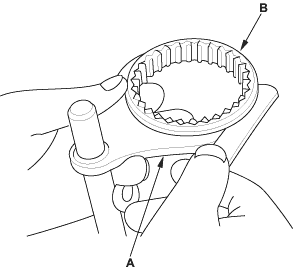
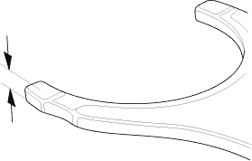
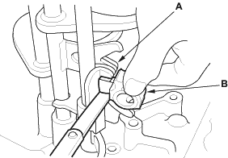
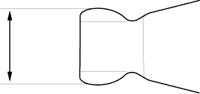

NOTE: The synchro sleeve and synchro hub should be replaced as a set.
- Measure the clearance between each shift fork (A) and its matching synchro sleeve (B). If the clearance exceeds the service limit, go to step 2.
Standard:
0.35 - 0.65 mm (0.014 - 0.026 in.)
Service Limit:
1.0 mm (0.039 in.)

- Measure the thickness of the shift fork fingers.
- If the thickness of the shift fork finger is not within the standard, replace the shift fork with a new one.
- If the thickness of the shift fork finger is within the standard, replace the synchro sleeve with a new one.
Standard:
7.4 - 7.6 mm (0.29 - 0.30 in.)


- Measure the clearance between the shift fork (A) and the shift arm (B). If the clearance exceeds the service limit, go to step 4.
Standard:
0.2 - 0.5 mm (0.007 - 0.020 in.)
Service Limit:
0.62 mm (0.024 in.)

- Measure the width of the shift arm.
- If the width of the shift arm is not within the standard, replace the shift arm with a new one.
- If the width of the shift arm is within the standard, replace the shift fork or shift piece with a new one.
Standard:
16.9 - 17.0 mm (0.665 - 0.669 in.)
